Released on October 22, 2008
(Next Release on October 29, 2008)
Domestic Proved Reserves Increase, Especially for Natural Gas
On October 16, EIA reported the good news that the United States increased its proved reserves of crude oil by 2 percent in 2007 (see Table 1). That is, producers added more than enough reserves to cover U.S. production. The even better news was in natural gas where the United States added more than twice as much in proved reserves as it produced in 2007 and ended the year with a highest total proved reserves since at least 1977, when EIA first estimated proved reserves.
Proved reserves are the estimated quantities that geological and engineering data demonstrate with reasonable certainty to be recoverable in future years from known reservoirs under existing economic and operating conditions. (See the Advance Summary: U.S. Crude Oil, Natural Gas, and Natural Gas Liquids Reserves 2007 Annual Report.) Increases in natural gas proved reserves signal the ability to increase production.
The 2007 increase in natural gas reserves was historic. It was the ninth consecutive year in which reserves grew, but the growth was more than twice as much as in any other year since EIA began estimating proved reserves in 1977. The record additions mostly reflect the rapid development of unconventional natural gas resources made up of coalbed methane and resources like shale and tight, low permeability, formations that use advanced technologies like horizontal drilling with hydraulic fracturing.
| Table 1. Natural Gas and Crude Oil Reserve Additions, 2007 | ||
|---|---|---|
| Dry Natural Gas (trillion cubic feet) | ||
| Proved Reserves, end of 2006 | 211.1 | |
| Plus Proved Reserves Additions, 2007 | +46.1 | |
| Less Production, 2007 | - 19.5 | |
| Proved Reserves, end of 2007 | 237.7 | (+13%) |
| Crude Oil (billion barrels) | ||
| Proved Reserves, 2006 | 21.0 | |
| Plus Proved Reserves Additions, 2007 | + 2.0 | |
| Less Production | - 1.7 | |
| Proved Reserves, 2007 | 21.3 | (+2%) |
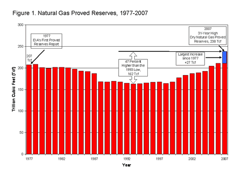
Natural Gas Production Up in First Half of 2008. U.S. natural gas production grew by 9 percent between the first 7 months of 2007 and the first 7 months in 2008. To put this growth in perspective, U.S. natural gas production was essentially flat for 9 years from 1998 through 2006, before rising by 4 percent in 2007. Thus, the growth in 2008 so far appears to mark an historic shift in U.S. natural gas production.
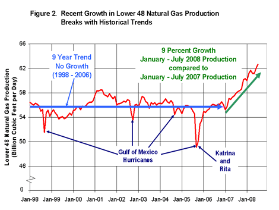
Increased Natural Gas Production Reduced the Need for Imports. The increased production in the United States meant that the country has needed to import less natural gas in 2008 than in 2007, especially in the form of LNG. For the first 7 months of 2008, LNG imports fell by 64 percent compared with the same period in 2007, continuing a trend of reduced imports that started in the second half of 2007.
How important were these reduced imports to U.S. natural gas customers? How do U.S. prices compare with those in Asia, the primary market for LNG this year? In 2008 through July, US wellhead natural gas prices rose to an average of $9.00 per thousand cubic feet (Mcf), well above the comparable 2007 level ($6.57/Mcf). Yet, even with the price rise, U.S. natural gas was priced well below LNG available on the world market, where increasing demand drove prices much higher. For example, Japan’s price averaged $13.30/Mcf for the first 7 months of the year. To get an idea of how important the growth of domestic natural gas production has been, one could calculate how much more it would have cost to buy LNG instead. For the first 7 months of the year, LNG would have cost about $4 billion more than the new U.S. production, given the prevailing prices actually observed at the time. The savings were probably even more pronounced in August and September, when U.S. natural gas prices fell and LNG prices in Asia rose.
Residential Heating Fuel Prices Continue Their Decline
Residential heating oil prices exhibited a more moderate fall during the period ending October 20, 2008. The average residential heating oil price decreased 16.4 cents last week to reach 322.6 cents per gallon, which was an increase of 35.7 cents from this time last year. Wholesale heating oil prices dropped by 9.4 cents to reach 225.7 cents per gallon, a decrease of 13.7 cents compared to the same period last year.
The average residential propane price slid 4.8 cents to hit 255.5 cents per gallon. This was an increase of 34.7 cents compared to the 220.8 cents per gallon average for this same time last year. Wholesale propane prices fell another 12.8 cents per gallon, from 110.9 cents to 98.1 cents per gallon. This was a decrease of 54.4 cents from the October 22, 2007 price of 152.5 cents per gallon.
U.S. Average Gasoline Price Slips Below $3 a Gallon
The U.S. average price for regular gasoline plunged another 23.7 cents to slip below $3 for the first time since February 11. At 291.4 cents per gallon, the price was the lowest since October 29, 2007 and 9.1 cents above the price this time last year. The national average price has now fallen for five weeks in a row, with a cumulative drop of more than 92 cents per gallon over this period, and a total of a 120-cent-per-gallon drop since the all-time high of 411.4 cents per gallon set on July 7. Prices were sharply lower in all regions of the country. The average price on the East Coast declined the most among the five regions, falling 28.5 cents to 293.8 cents per gallon. The Lower Atlantic portion of the region plunged by 35.1 cents to hit 293.7 cents per gallon. In the Midwest, the average price tumbled 22.3 cents to 276.9 cents a gallon. The price decreased 25.6 cents in the Gulf Coast to 273.4 cents per gallon, the lowest average price among the major regions. Although price the price in the Rocky Mountains fell 22.8 cents, it remained above $3 at 304 cents per gallon. Dropping for the seventeenth week in a row, the price on the West Coast dipped 14.6 cents to 327.5 cents per gallon. The price in California slipped 11.5 cents to reach 335.5 cents per gallon.
The U.S. average diesel price plunged 17.7 cents to 348.2 cents per gallon, the lowest price since February 18 of this year. Prices dropped steeply in all regions of the country. On the East Coast, the average slumped 15.6 cents to 355.3 cents per gallon. Tumbling 19.4 cents, the price in the Midwest fell the most of any region, to 344.7 cents per gallon. The average price in the Gulf Coast sank 17.8 cents to 345.3 cents per gallon. The price in the Rocky Mountains dropped 14.2 cents to 355.5 cents per gallon. The price on the West Coast remained the lowest average price of any region, plunging 18.9 cents to 343.3 cents per gallon. In California, the average price shrank by 19.6 cents to 346 cents per gallon.
Propane Inventories Post First Seasonal Draw
The Nation’s primary supply of propane declined last week for the first time since March 28, falling slightly to reach an estimated 61.1 million barrels as of October 17, 2008. Total propane inventories fell short of moving within the lower boundary of the average range, marking the fifth consecutive month where inventories have trailed below this threshold. Regional inventories were mixed, rising in the East Coast and combined Rocky Mountain/West Coast regions but falling in the Midwest region. The Gulf Coast region was virtually unchanged. Propylene non-fuel use inventories moved lower and accounted for a 4.8 percent share of total propane/propylene inventories, down from the prior week’s 5.2 percent share.
Text from the previous editions of “This Week In Petroleum” is now accessible through a link at the top right-hand corner of this page.
| Retail Prices (Cents Per Gallon) | |||||||
| 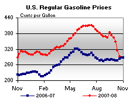 | 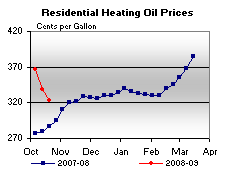 | ||||||
| 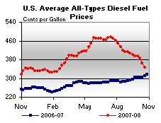 | 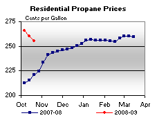 | ||||||
| Retail Data | Changes From | Retail Data | Changes From | ||||
| 10/20/08 | Week | Year | 10/20/08 | Week | Year | ||
| Gasoline | 291.4 | Heating Oil | 322.6 | ||||
| Diesel Fuel | 348.2 | Propane | 255.5 | ||||
| Spot Prices (Cents Per Gallon*) | |||||||||||||||||||||||||||||||||||
| 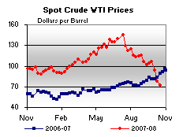 | 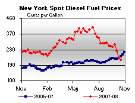 | ||||||||||||||||||||||||||||||||||
| 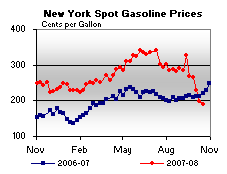 | 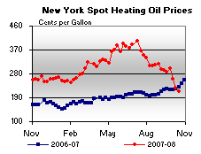 | ||||||||||||||||||||||||||||||||||
|
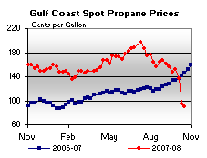 | ||||||||||||||||||||||||||||||||||
| *Note: Crude Oil WTI Price in Dollars per Barrel. | |||||||||||||||||||||||||||||||||||
| Stocks (Million Barrels) | |||||||
| 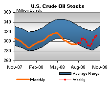 | 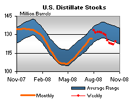 | ||||||
| 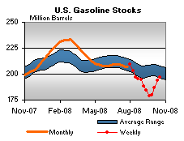 | 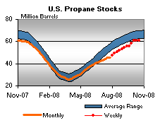 | ||||||
| Stocks Data | Changes From | Stocks Data | Changes From | ||||
| 10/17/08 | Week | Year | 10/17/08 | Week | Year | ||
| Crude Oil | 311.4 | Distillate | 124.3 | ||||
| Gasoline | 196.5 | Propane | 61.111 | ||||